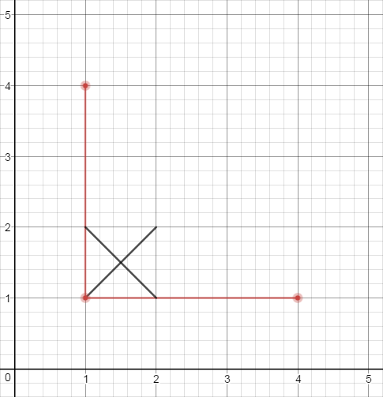

import java.util.LinkedList;
import java.awt.Point;
public class FaceFinder
{
int[][] m;
void floodfill(int x, int y)
{
int[] dx = {0,0,1,-1};
int[] dy = {1,-1,0,0};
LinkedList<Point> q = new LinkedList<Point>();
q.add(new Point(x,y));
m[y][x]=1;
while (q.size()!=0) {
Point p = q.poll();
for(int i=0; i<4; i++) {
x = p.x+dx[i];
y = p.y+dy[i];
if (x>=0 && y>=0 && x<=402 && y<=402 && m[y][x]==0) {
q.add(new Point(x,y));
m[y][x]=1;
}
}
}
}
public int howMany(String[] lines) {
int faces=0;
m = new int[403][403];
for (int i=0; i < lines.length; i++) {
String[] s = lines[i].split(" ");
int x1 = 4*Integer.parseInt(s[0]), y1 = 4*Integer.parseInt(s[1]);
int x2 = 4*Integer.parseInt(s[2]), y2 = 4*Integer.parseInt(s[3]);
int dx = x2-x1, dy = y2-y1;
if(dx>0) dx=1; if(dx<0) dx=-1; if(dy>0) dy=1; if(dy<0) dy=-1;
while (x2!=x1 || y2!=y1) {
m[y1+1][x1+1]=1;
if(x2!=x1) x1+=dx; if(y2!=y1) y1+=dy;
}
m[y1+1][x1+1] = 1;
}
for (int i=0; i <= 400; i++) {
for (int j=0; j <= 400; j++) {
if (m[i][j] == 0) {
faces++;
floodfill(j,i);
}
}
}
return faces;
}
}
Explanation

배열의 테두리에 있는 칸들은 무한한 영역으로 치부한다.
위 좌표평면에서 X표시를 5개로 나눠진 작은 1칸에만 할 경우 영역 구분이 불가능하므로 각 x1,y1,x2,y2 에 4를 곱해준다 (4배가 탐색할 수 있는 최소배수이다). 예를 들어, "0 0 1 1"이면 대각선인 (1,1) (5,5)까지의 영역인 배열 요소에 1로 표시한다((0,0)부터 표시를 안해주는 이유는 (0,0)이 무한한 영역이기 때문이다).
m[i][j] == 0 인 i,j가 있다면 해당 요소는 구분된 영역이므로 faces++ 해준다. 그 후 floodfill() 함수를 통해 i,j 근처의 0인 영역을 상하좌우 방향으로 전부 찾아 1로 바꾸어준다.
References